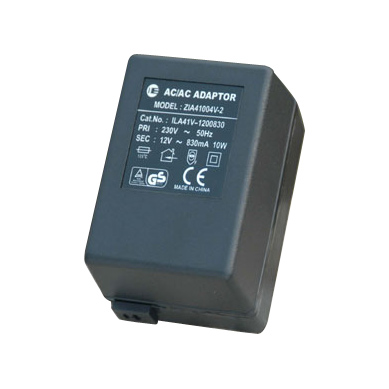

What was implemented
- Temperature and Humidity visibility
- Arduino
- DHT22 using ehternet cabling
- Custom rrdtool frontend on a pi
Old future plans
- Thermostate control
- Graphite
Tips received
Openhr20
Current status: the bad
- NEST
- Digital radiator valves (hr20)s installed but not used
Current status: the good
- pi
- TMP for outdoor temp
- NEST readout
- Graphite
Today: DS18B20 Waterproof Digital Temperature Probe
Today: One pi to rule them all
Today: Custom code
[general]
carbonhost = graphite.maxlan.be
carbonport = 2003
units = C
[nest]
user =
password =
Today: Testing
- Wireless sensors
- 433Mhz
- 2.4GHz
Today: Tomorrow
- Water meter monitoring
- Gas meter monitoring
- Power monitoring
Tomorrow: Water
Flukso probe
Tomorrow: Gas
Flukso probe
Tomorrow: Power usage
Current clamp
AC/AC convertor

Pointers
http://www.pilight.org/
/